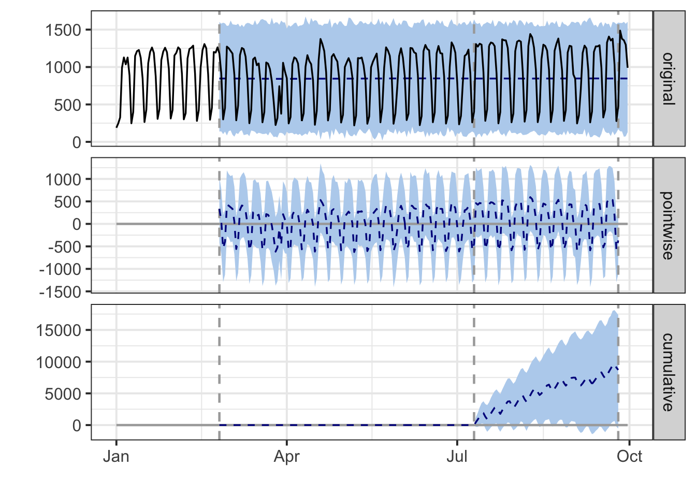

The Adobe Analytics API
Adobe Analytics access is supplied via Randy Zwitch’s RSiteCatalyst library. There are tons of explanations and examples in the content that Randy created for the library.
Authentication is a little harder to configure for Adobe so a live example is not shown here, but steps to download data are shown below.
Installation
## This installs a package for downloading Adobe Analytics data
if(!require(RSiteCatalyst)) install.packages("RSiteCatalyst")Authentication
There are two options for authenticating with Adobe Analytics. The newer way uses OAuth2, which is objectively “better” from a security and general elegance perspective, but it’s a bit more involved to set up. The older way simply relies on a couple of keys (a user name and a “secret”) and, at some point, will likely be deprecated.
Authentication - New
This is the new OAuth2 method of authentication. Use this one if you can…
First, you will need to link your Adobe Analytics login to the Adobe ID account to use this method of signin.
Create Application
If you have no application for your Adobe Analytics account, here is how to make one:
- Create an app by visiting the Adobe developer console and navigating to Developer > Applications
- Select “Web Server (Authorization Code)”
- Name the application
- Leave the Redirect Uri field blank.

You should then see this screen to grant permission after running SCAuth

Authentication - Old
This is the deprecated method and will (allegedly) disappear “soon.”
Get the Web Service key under the Adobe Analytics Account Information page.
- User Name is used as the key (note that includes both your username and your company name)
- Shared Secret is used as the secret

If you use this method, then you authenticate via:
library(RSiteCatalyst)
key <- Sys.getenv("ADOBE_KEY_OLD")
secret <- Sys.getenv("ADOBE_SECRET_OLD")
SCAuth(key, secret)Recording Secret Keys
A best practice is to not put any keys or tokens directly in your code. Rather, you can save these values to a .Renviron file in your home directory, and then call them via the commands below. The BIG benefit of this approach is that it reduces the chance that you will accidentally put your API keys put on Github. It’s great to share your code, but not great to share access to your data!
As an example, this is the .Renviron file in my root directory: ~/.Renviron
ADOBE_KEY="a7xxxxx639-iih-nordic-r"
ADOBE_SECRET="2eadxxxxx1495ea49"
ADOBE_KEY_OLD="mark:XXXXXX"
ADOBE_SECRET_OLD="74b46625xxxxx7e89dbe6e0"Calling Adobe Analytics
Once you have setup your authentication method, you can call data using the below.
The SCAuth() function will open your browser or read the existing auth-adobe file if using the newer OAuth2 method, or return [1] "Credentials Saved in RSiteCatalyst Namespace." if using legacy.
library(RSiteCatalyst)
## New OAuth method
key <- Sys.getenv("ADOBE_KEY")
secret <- Sys.getenv("ADOBE_SECRET")
SCAuth(key, secret,
company = "XXXXX",
token.file = "auth-adobe",
auth.method = "OAUTH2")
## Old legacy method
key <- Sys.getenv("ADOBE_KEY_OLD")
secret <- Sys.getenv("ADOBE_SECRET_OLD")
SCAuth(key, secret)
You should be then able to see the report suites via:
suites <- GetReportSuites()
head(suites)Pulling Data Reports
There are 5 different types of Adobe Analytics reports that can be pulled out via the API:
- Overtime -
QueueOvertime() - Ranked -
QueueRanked() - Trended -
QueueTrended() - Pathing -
QueuePathing() - Fallout -
QueueFallout()
See the characteristics of the reports here
Advanced API fetching
If you are not covered by the existing template calls, other API calls can be made via SubmitJsonQueueReport if you build the JSON yourself. It is suggested to use R lists and the library jsonlite to create these.
API response time
- Response times for the API is variable
- It can take anywhere between 10 seconds and 5 minutes or even timeout.
- The size of the requested report doesn’t make much impact (within reason)
- It’s recommended that you make a function to wrap around API calls to retry if an error detected if used in automatic scripts.
- The first call is the most expensive - subsequent calls are cached.
Demo API calls
We set some common parameters here:
date.from <- "2016-03-01"
date.to <- "2016-03-08"
reportsuite.id <- "grecodemystified"Overtime
Returns an overtime report. Or, rather, maybe this is “over time,” since it’s trending data across a time period, and we’re not paying time-and-a-half to the API to get the data.
This is similar to the key metrics report in that the only granularity allowed is time.
QueueOvertime() requires a start and end date, a reportsuite ID, and a character vector of metrics.
metrics <- c("visits","uniquevisitors","pageviews")
## wrap in system.time to report how long it takes
overtime.data <- QueueOvertime(reportsuite.id, date.from, date.to, metrics)
head(overtime.data)You may also wish to set any of the 5 optional named parameters.
metrics <- c("visits","uniquevisitors","pageviews")
date.granularity <- "hour"
segment.id <- "Visit_Natural_Search"
anomaly.detection <- FALSE
data.current <- TRUE
expedite <- FALSE ## only can set to TRUE if you have permission
overtime.data <- QueueOvertime(reportsuite.id,
date.from, date.to,
metrics,
date.granularity = date.granularity,
segment.id = segment.id,
anomaly.detection = anomaly.detection,
data.current = data.current,
expedite = expedite)
Data format
Report data is returned with the following R classes:
knitr::kable(head(overtime.data))| datetime | name | year | month | day | hour | segment.id | segment.name | visits | uniquevisitors | pageviews |
|---|---|---|---|---|---|---|---|---|---|---|
| 2017-03-01 00:00:00 | Wed. 1 Mar. 2017 | 2017 | 3 | 1 | 0 | Visit_Natural_Search | Visits from Natural Search | 40 | 40 | 48 |
| 2017-03-01 01:00:00 | Wed. 1 Mar. 2017 (Hour 1) | 2017 | 3 | 1 | 1 | Visit_Natural_Search | Visits from Natural Search | 58 | 58 | 75 |
| 2017-03-01 02:00:00 | Wed. 1 Mar. 2017 (Hour 2) | 2017 | 3 | 1 | 2 | Visit_Natural_Search | Visits from Natural Search | 44 | 43 | 62 |
| 2017-03-01 03:00:00 | Wed. 1 Mar. 2017 (Hour 3) | 2017 | 3 | 1 | 3 | Visit_Natural_Search | Visits from Natural Search | 65 | 65 | 84 |
| 2017-03-01 04:00:00 | Wed. 1 Mar. 2017 (Hour 4) | 2017 | 3 | 1 | 4 | Visit_Natural_Search | Visits from Natural Search | 65 | 65 | 84 |
| 2017-03-01 05:00:00 | Wed. 1 Mar. 2017 (Hour 5) | 2017 | 3 | 1 | 5 | Visit_Natural_Search | Visits from Natural Search | 79 | 79 | 94 |
str(overtime.data)## 'data.frame': 192 obs. of 11 variables:
## $ datetime : POSIXct, format: "2017-03-01 00:00:00" "2017-03-01 01:00:00" ...
## $ name : chr "Wed. 1 Mar. 2017" "Wed. 1 Mar. 2017 (Hour 1)" "Wed. 1 Mar. 2017 (Hour 2)" "Wed. 1 Mar. 2017 (Hour 3)" ...
## $ year : int 2017 2017 2017 2017 2017 2017 2017 2017 2017 2017 ...
## $ month : int 3 3 3 3 3 3 3 3 3 3 ...
## $ day : int 1 1 1 1 1 1 1 1 1 1 ...
## $ hour : int 0 1 2 3 4 5 6 7 8 9 ...
## $ segment.id : chr "Visit_Natural_Search" "Visit_Natural_Search" "Visit_Natural_Search" "Visit_Natural_Search" ...
## $ segment.name : chr "Visits from Natural Search" "Visits from Natural Search" "Visits from Natural Search" "Visits from Natural Search" ...
## $ visits : num 40 58 44 65 65 79 86 109 117 73 ...
## $ uniquevisitors: num 40 58 43 65 65 79 86 107 117 73 ...
## $ pageviews : num 48 75 62 84 84 94 113 130 204 107 ...Ranked
Returns a ranked report. This is an ordered list of elements and associated metrics with no time granularity.
QueueRanked requires a start and end date, a reportsuite ID, a character vector of elements and a character vector of metrics.
metrics <- c("visits","uniquevisitors","pageviews","event1")
elements <- c("page","geoCountry","geoCity")
ranked.data <- QueueRanked(reportsuite.id, date.from, date.to, metrics, elements)You may also wish to set any of the 6 optional named parameters. The 1.4 API only supports this for the first element specified. In the example below, selected applies to the first element, page.
Data format
Report data is returned with the following R classes:
knitr::kable(head(ranked.data))| page | geoCountry | geoCity | visits | uniquevisitors | pageviews | event1 | event2 | segment.id | segment.name |
|---|---|---|---|---|---|---|---|---|---|
| excel-tips/excel-dynamic-named-ranges-never-manually-updating-your-charts-2/ | United States | New York (New York, United States) | 34 | 32 | 35 | 0 | 0 | ||
| excel-tips/excel-dynamic-named-ranges-never-manually-updating-your-charts-2/ | United States | Houston (Texas, United States) | 21 | 21 | 22 | 0 | 0 | ||
| excel-tips/excel-dynamic-named-ranges-never-manually-updating-your-charts-2/ | United States | Los Angeles (California, United States) | 16 | 14 | 19 | 0 | 0 | ||
| excel-tips/excel-dynamic-named-ranges-never-manually-updating-your-charts-2/ | United States | Minneapolis (Minnesota, United States) | 12 | 8 | 12 | 0 | 0 | ||
| excel-tips/excel-dynamic-named-ranges-never-manually-updating-your-charts-2/ | United States | Dallas (Texas, United States) | 11 | 11 | 12 | 0 | 0 | ||
| excel-tips/excel-dynamic-named-ranges-never-manually-updating-your-charts-2/ | United States | St Paul (Minnesota, United States) | 11 | 10 | 11 | 0 | 0 |
str(ranked.data)## 'data.frame': 1649 obs. of 10 variables:
## $ page : chr "excel-tips/excel-dynamic-named-ranges-never-manually-updating-your-charts-2/" "excel-tips/excel-dynamic-named-ranges-never-manually-updating-your-charts-2/" "excel-tips/excel-dynamic-named-ranges-never-manually-updating-your-charts-2/" "excel-tips/excel-dynamic-named-ranges-never-manually-updating-your-charts-2/" ...
## $ geoCountry : chr "United States" "United States" "United States" "United States" ...
## $ geoCity : chr "New York (New York, United States)" "Houston (Texas, United States)" "Los Angeles (California, United States)" "Minneapolis (Minnesota, United States)" ...
## $ visits : num 34 21 16 12 11 11 10 10 9 9 ...
## $ uniquevisitors: num 32 21 14 8 11 10 10 10 9 9 ...
## $ pageviews : num 35 22 19 12 12 11 11 10 10 9 ...
## $ event1 : num 0 0 0 0 0 0 0 0 0 0 ...
## $ event2 : num 0 0 0 0 0 0 0 0 0 0 ...
## $ segment.id : Factor w/ 1 level "": 1 1 1 1 1 1 1 1 1 1 ...
## $ segment.name : Factor w/ 1 level "": 1 1 1 1 1 1 1 1 1 1 ...Trended
Returns a trended report. This is an ordered list of elements and associated metrics with time granularity.
QueueTrended requires a start and end date, a reportsuite ID, a character vector of elements and a character vector of metrics.
metrics <- c("visits","uniquevisitors","pageviews","event1")
elements <- c("page","geoCountry","geoCity")
trended.data <- QueueTrended(reportsuite.id, date.from, date.to, metrics, elements)
You may also wish to set any of the 7 optional named parameters. As with QueueRanked() the 1.4 API only supports selected for the first element specified.
metrics <- c("visits","uniquevisitors","pageviews","event1")
elements <- c("page","geoCountry","geoCity")
top <- 100
start <- 100
selected <- c("excel-tips/excel-dropdowns-done-right-data-validation-and-named-ranges/",
"excel-tips/excel-dynamic-named-ranges-never-manually-updating-your-charts-2/")
date.granularity <- "hour"
segment.id <- ""
data.current <- TRUE
expedite <- FALSE
trended.data <- QueueTrended(reportsuite.id,
date.from, date.to,
metrics,
elements,
top = top,
start = start,
selected = selected,
segment.id = segment.id,
data.current = data.current,
expedite = expedite)Data format
Report data is returned with the following R classes:
## to print in table convert POSIXlt to Date
trended.data$datetime <- as.Date(trended.data$datetime)
knitr::kable(head(trended.data))| datetime | page | geoCountry | geoCity | visits | uniquevisitors | pageviews | event1 | segment.id | segment.name |
|---|---|---|---|---|---|---|---|---|---|
| 2017-03-01 | excel-tips/excel-dynamic-named-ranges-never-manually-updating-your-charts-2/ | United States | New York (New York, United States) | 8 | 7 | 8 | 0 | ||
| 2017-03-01 | excel-tips/excel-dynamic-named-ranges-never-manually-updating-your-charts-2/ | United States | Dallas (Texas, United States) | 4 | 4 | 4 | 0 | ||
| 2017-03-01 | excel-tips/excel-dynamic-named-ranges-never-manually-updating-your-charts-2/ | United States | Brooklyn (New York, United States) | 3 | 3 | 4 | 0 | ||
| 2017-03-01 | excel-tips/excel-dynamic-named-ranges-never-manually-updating-your-charts-2/ | United States | Minneapolis (Minnesota, United States) | 3 | 2 | 3 | 0 | ||
| 2017-03-01 | excel-tips/excel-dynamic-named-ranges-never-manually-updating-your-charts-2/ | United States | Charlotte (North Carolina, United States) | 3 | 2 | 3 | 0 | ||
| 2017-03-01 | excel-tips/excel-dynamic-named-ranges-never-manually-updating-your-charts-2/ | United States | Fairfax (Virginia, United States) | 2 | 2 | 2 | 0 |
str(trended.data)## 'data.frame': 2402 obs. of 10 variables:
## $ datetime : Date, format: "2017-03-01" "2017-03-01" ...
## $ page : chr "excel-tips/excel-dynamic-named-ranges-never-manually-updating-your-charts-2/" "excel-tips/excel-dynamic-named-ranges-never-manually-updating-your-charts-2/" "excel-tips/excel-dynamic-named-ranges-never-manually-updating-your-charts-2/" "excel-tips/excel-dynamic-named-ranges-never-manually-updating-your-charts-2/" ...
## $ geoCountry : chr "United States" "United States" "United States" "United States" ...
## $ geoCity : chr "New York (New York, United States)" "Dallas (Texas, United States)" "Brooklyn (New York, United States)" "Minneapolis (Minnesota, United States)" ...
## $ visits : num 8 4 3 3 3 2 2 2 2 2 ...
## $ uniquevisitors: num 7 4 3 2 2 2 2 2 2 2 ...
## $ pageviews : num 8 4 4 3 3 2 2 2 2 2 ...
## $ event1 : num 0 0 0 0 0 0 0 0 0 0 ...
## $ segment.id : Factor w/ 1 level "": 1 1 1 1 1 1 1 1 1 1 ...
## $ segment.name : Factor w/ 1 level "": 1 1 1 1 1 1 1 1 1 1 ...Pathing
Returns a pathing report. This is an ordered list of paths matching the specified pattern.
QueuePathing requires a start and end date, a reportsuite ID, a single element, a single metric and a pattern of element values that defined the path.
metric <- "pageviews"
element <- "page"
pattern <- c("excel-tips/excel-dropdowns-done-right-data-validation-and-named-ranges/",
"::anything::",
"::anything::")
cache_file <- "adobecache/pathing_data.rds"
if(!file.exists(cache_file)){
pathing.data <- QueuePathing(reportsuite.id,
date.from, date.to,
metric,
element,
pattern)
saveRDS(pathing.data, file = cache_file)
} else {
pathing.data <- readRDS(cache_file)
}metric <- "pageviews"
element <- "page"
pattern <- c("excel-tips/excel-dropdowns-done-right-data-validation-and-named-ranges/",
"::anything::",
"::anything::")
pathing.data <- QueuePathing(reportsuite.id,
date.from, date.to,
metric,
element,
pattern)
Data format
Report data is returned with the following R classes:
knitr::kable(head(pathing.data))| step.1 | step.2 | step.3 | count | segment.id | segment.name |
|---|---|---|---|---|---|
| excel-tips/excel-dropdowns-done-right-data-validation-and-named-ranges/ | excel-tips/excel-dropdowns-done-right/ | Exited Site | 148 | ||
| excel-tips/excel-dropdowns-done-right-data-validation-and-named-ranges/ | excel-tips/excel-dynamic-named-ranges-never-manually-updating-your-charts-2/ | Exited Site | 10 | ||
| excel-tips/excel-dropdowns-done-right-data-validation-and-named-ranges/ | excel-tips/excel-dropdowns-done-right/ | excel-tips/excel-dropdowns-done-right-data-validation-and-named-ranges/ | 10 | ||
| excel-tips/excel-dropdowns-done-right-data-validation-and-named-ranges/ | excel-tips/excel-dropdowns-done-right/ | excel-tips/excel-dynamic-named-ranges-never-manually-updating-your-charts-2/ | 3 | ||
| excel-tips/excel-dropdowns-done-right-data-validation-and-named-ranges/ | home | Exited Site | 1 | ||
| excel-tips/excel-dropdowns-done-right-data-validation-and-named-ranges/ | category/excel-tips/ | excel-tips/excel-dropdowns-done-right-data-validation-and-named-ranges/ | 1 |
str(pathing.data)## 'data.frame': 12 obs. of 6 variables:
## $ step.1 : chr "excel-tips/excel-dropdowns-done-right-data-validation-and-named-ranges/" "excel-tips/excel-dropdowns-done-right-data-validation-and-named-ranges/" "excel-tips/excel-dropdowns-done-right-data-validation-and-named-ranges/" "excel-tips/excel-dropdowns-done-right-data-validation-and-named-ranges/" ...
## $ step.2 : chr "excel-tips/excel-dropdowns-done-right/" "excel-tips/excel-dynamic-named-ranges-never-manually-updating-your-charts-2/" "excel-tips/excel-dropdowns-done-right/" "excel-tips/excel-dropdowns-done-right/" ...
## $ step.3 : chr "Exited Site" "Exited Site" "excel-tips/excel-dropdowns-done-right-data-validation-and-named-ranges/" "excel-tips/excel-dynamic-named-ranges-never-manually-updating-your-charts-2/" ...
## $ count : num 148 10 10 3 1 1 1 1 1 1 ...
## $ segment.id : Factor w/ 1 level "": 1 1 1 1 1 1 1 1 1 1 ...
## $ segment.name: Factor w/ 1 level "": 1 1 1 1 1 1 1 1 1 1 ...Fallout
Returns a fallout report. This is a pathed list of elements, with fallout values for each.
QueuePathing requires a start and end date, a reportsuite ID, a single element, a character vector of metrics and a character vector of element values that defined the checkpoints.
metrics <- "pageviews"
element <- "page"
checkpoints <- c("excel-tips/excel-dropdowns-done-right-data-validation-and-named-ranges/",
"excel-tips/excel-dropdowns-done-right/",
"excel-tips/excel-dynamic-named-ranges-never-manually-updating-your-charts-2/")
fallout.data <- QueueFallout(reportsuite.id, date.from, date.to, metrics, element, checkpoints)
Data format
Report data is returned with the following R classes:
knitr::kable(head(fallout.data))| name | url | pageviews | segment.id | segment.name |
|---|---|---|---|---|
| excel-tips/excel-dropdowns-done-right-data-validation-and-named-ranges/ | http://analyticsdemystified.com/excel-tips/excel-dropdowns-done-right-data-validation-and-named-ranges | 1309 | ||
| excel-tips/excel-dropdowns-done-right/ | http://analyticsdemystified.com/excel-tips/excel-dropdowns-done-right | 161 | ||
| excel-tips/excel-dynamic-named-ranges-never-manually-updating-your-charts-2/ | http://analyticsdemystified.com/excel-tips/excel-dynamic-named-ranges-never-manually-updating-your-charts-2 | 3 |
str(fallout.data)## 'data.frame': 3 obs. of 5 variables:
## $ name : chr "excel-tips/excel-dropdowns-done-right-data-validation-and-named-ranges/" "excel-tips/excel-dropdowns-done-right/" "excel-tips/excel-dynamic-named-ranges-never-manually-updating-your-charts-2/"
## $ url : chr "http://analyticsdemystified.com/excel-tips/excel-dropdowns-done-right-data-validation-and-named-ranges" "http://analyticsdemystified.com/excel-tips/excel-dropdowns-done-right" "http://analyticsdemystified.com/excel-tips/excel-dynamic-named-ranges-never-manually-updating-your-charts-2"
## $ pageviews :List of 3
## ..$ : chr "1309"
## ..$ : chr "161"
## ..$ : chr "3"
## $ segment.id : Factor w/ 1 level "": 1 1 1
## $ segment.name: Factor w/ 1 level "": 1 1 1Example
A typical project flow is:
- Determine question to be answered via data
- Scope out the required metrics, props, events etc.
- Download small sample to test data is in correct format
- Transform data to shape you need for output
- Perform statistical modelling etc.
- Revisit step 2 if necessary
- Finalise output with sample data
- Download full data if necessary
- Automate scripts if necessary
We demonstrate the above with the question “Did my TV campaign have a significant effect on my SEO traffic?”
Pose the right question
We want to measure if a statistical significant effect occured to our Natural Search traffic segment when a TV campaign ran from X to Y
Scope out requirements
We require sessions in the Natural Search traffic segment trended over time.
Download sample
date.from <- "2016-01-01"
date.to <- "2016-09-30"
reportsuite.id <- "grecodemystified"
metrics <- "visits"
segment.id <- "Visit_Natural_Search"
date.granularity <- "day"
overtime.data <- QueueOvertime(reportsuite.id,
date.from, date.to,
metrics,
date.granularity = date.granularity,
segment.id = segment.id)
The data is in this format:
str(overtime.data)## 'data.frame': 274 obs. of 8 variables:
## $ datetime : POSIXct, format: "2016-01-01" "2016-01-02" ...
## $ name : chr "Fri. 1 Jan. 2016" "Sat. 2 Jan. 2016" "Sun. 3 Jan. 2016" "Mon. 4 Jan. 2016" ...
## $ year : int 2016 2016 2016 2016 2016 2016 2016 2016 2016 2016 ...
## $ month : int 1 1 1 1 1 1 1 1 1 1 ...
## $ day : int 1 2 3 4 5 6 7 8 9 10 ...
## $ segment.id : chr "Visit_Natural_Search" "Visit_Natural_Search" "Visit_Natural_Search" "Visit_Natural_Search" ...
## $ segment.name: chr "Visits from Natural Search" "Visits from Natural Search" "Visits from Natural Search" "Visits from Natural Search" ...
## $ visits : num 188 247 326 993 1128 ...Transform data
This is usually the most involved step, but for this simple example we just need the datetime and visit columns
## subset to columns we need
model_data <- overtime.data[,c('datetime', 'visits')]
## make datetime a Date object
model_data$datetime <- as.Date(model_data$datetime)A quick exploratory plot:
plot(model_data, type = "l")
Statistical modelling
We will now use the CausalImpact package to test the effect of a pretend TV campaign starting around March 10th
## install CausalImpact if you don't already have it
## https://google.github.io/CausalImpact/
## load CausalImpact
library(CausalImpact)
## load zoo for working with timeseries
library(zoo)
## turn model_data into a zoo object to work with CausalImpact
model_zoo <- zoo(model_data$visits, order.by = model_data$datetime)
## specify the before and after event segments
## assuming the TV campaign started on 3rd March, 2016
pre.period <- as.Date(c("2016-02-25", "2016-07-10"))
post.period <- as.Date(c("2016-07-11","2016-09-25"))
impact <- CausalImpact(model_zoo, pre.period, post.period) CausalImpact includes a verbal report and plot to show its findings:
impact$report## [1] "\n\nDuring the post-intervention period, the response variable had an average value of approx. 959.71. In the absence of an intervention, we would have expected an average response of 846.75. The 95% interval of this counterfactual prediction is [724.13, 965.68]. Subtracting this prediction from the observed response yields an estimate of the causal effect the intervention had on the response variable. This effect is 112.97 with a 95% interval of [-5.96, 235.58]. For a discussion of the significance of this effect, see below.\n\nSumming up the individual data points during the post-intervention period (which can only sometimes be meaningfully interpreted), the response variable had an overall value of 73.90K. Had the intervention not taken place, we would have expected a sum of 65.20K. The 95% interval of this prediction is [55.76K, 74.36K].\n\nThe above results are given in terms of absolute numbers. In relative terms, the response variable showed an increase of +13%. The 95% interval of this percentage is [-1%, +28%].\n\nThis means that, although the intervention appears to have caused a positive effect, this effect is not statistically significant when considering the entire post-intervention period as a whole. Individual days or shorter stretches within the intervention period may of course still have had a significant effect, as indicated whenever the lower limit of the impact time series (lower plot) was above zero. The apparent effect could be the result of random fluctuations that are unrelated to the intervention. This is often the case when the intervention period is very long and includes much of the time when the effect has already worn off. It can also be the case when the intervention period is too short to distinguish the signal from the noise. Finally, failing to find a significant effect can happen when there are not enough control variables or when these variables do not correlate well with the response variable during the learning period.\n\nThe probability of obtaining this effect by chance is very small (Bayesian one-sided tail-area probability p = 0.032). This means the causal effect can be considered statistically significant."plot(impact)
Review output
Many refinements to the model could be made, for instance:
- Also download control metrics such as direct visits, paid search that may be confounders
- Combine the model data with TV spend data
…but for now we assume the output is valuable and we want to publish.
Finalise Output
For final display we use a D3 javascript library, Dygraphs, to display the results:
## install dygraphs if necessary
library(dygraphs)
## plot data kept in impact$series
plot_data <- impact$series
dygraph(data=plot_data[,c('cum.effect', 'cum.effect.lower', 'cum.effect.upper')],
main="Cumulative Impact of Event (95% confidence level)", group="ci") %>%
dyRangeSelector() %>%
dyEvent(x = as.Date("2016-03-10"), "TV Campaign") %>%
dySeries(c('cum.effect.lower', 'cum.effect', 'cum.effect.upper'), label='Cumulative Effect')Automate?
For automation, the script could run every day to update with the most recent web data, and pull TV campaign dates from another maintained file.
The results could also be made available via a JSON API using a service such as [OpenCPU], for display in other departments dashboards or similar.
A final step could be to alter marketing spend based on the results of the function - for instance increasing brand PPC spend for TV campaigns that have a poor effect.
Data strategy for larger data
It may be that the amount of data you require is more than can reasonably be gathered through the API.
In that instance, other strategies used are, in rough order of performance:
- Export the raw data dump from Adobe Analytics into a database, then use R connectors for that.
- R is also integrated into Spark, so Hadoop/SparkR integrations are used.
- Export Data Warehouse exports via secure FTP to a folder, then read the csv files into R.
- Build robust scripts that retry timeouts from the API and batch and recombine data over a long period.
Generating web_data
Throughout this site, examples and exercise use a data frame called web_data. That example data was initially built using Google Analytics data, and instructions for generating that data with your own Google Analytic data are on the Google Analytics API page.
But, you’re reading about the Adobe Analytics API here, so we can assume you might want to do these same exercises with Adobe Analytics data. To do that, we can use Last Touch Channel (Adobe) in lieu of Default Channel Grouping (Google Analytics), as well as swap out some other values for comparable dimensions and metrics. If you are not using Marketing Channels in Adobe Analytics, then you will need to adjust the code below by replacing the lasttouchchannel dimension with the appropriate dimension.
To do that, first follow the steps for one of the authentication options described earlier on this page. Once that is done, you can use the following overtime command to pull the base data.
# reportsuite.id <- [uncomment this line and insert your RSID]
date.from <- "2016-01-01"
date.to <- "2016-08-01"
metrics <- c("visits","pageviews","entries","bounces")
elements <- c("mobiledevicetype","lasttouchchannel")
top <- 10
date.granularity <- "day"
web_data <- QueueTrended(reportsuite.id,
date.from, date.to,
metrics,
elements,
top = top)This should give us a table that looks something like this:
| datetime | mobiledevicetype | lasttouchchannel | visits | pageviews | entries | bounces | segment.id | segment.name |
|---|---|---|---|---|---|---|---|---|
| 2016-01-01 | Other | Natural Search | 2839 | 13261 | 2776 | 1077 | ||
| 2016-01-01 | Other | Paid Search | 1499 | 9755 | 1479 | 546 | ||
| 2016-01-01 | Other | Direct | 1448 | 6864 | 1448 | 802 | ||
| 2016-01-01 | Other | Natural Search-Bloomreach | 1080 | 2901 | 1042 | 602 | ||
| 2016-01-01 | Other | Referring Domains | 502 | 2192 | 479 | 234 | ||
| 2016-01-01 | Other | Internal | 238 | 1007 | 238 | 79 |
We need to do a little bit of adjustments to the data to, well, Google-ify it – make it structurally match what’s expected for the other examples on this site.
First, let’s drop the segment.id and segment.name columns and rename the columns:
library(dplyr) # We'll use the select() function from dplyr
web_data <- select(web_data,-segment.id,-segment.name)
colnames(web_data) <- c("date","deviceCategory","channelGrouping","sessions",
"pageviews","entrances","bounces")And, now, we need to do a few additional things just to make the data match the sort of data that comes out of a similar query to Google Analytics, which will make the object more compatible with other examples on this site.
# Change the `date` format to be `Date` rather than `POSIXlt.`
web_data$date <- as.Date(web_data$date)
# Change the `Other` value to be `Desktop` for `deviceCategory.`
web_data[web_data$deviceCategory=="Other","deviceCategory"] <- "Desktop"
#Change `Natural Search` to `Organic Search` for `channelGrouping.`
web_data[web_data$channelGrouping=="Natural Search","channelGrouping"] <- "Organic Search"This should give us a table that looks something like this:
| date | deviceCategory | channelGrouping | sessions | pageviews | entrances | bounces |
|---|---|---|---|---|---|---|
| 2016-01-01 | Desktop | Organic Search | 2839 | 13261 | 2776 | 1077 |
| 2016-01-01 | Desktop | Paid Search | 1499 | 9755 | 1479 | 546 |
| 2016-01-01 | Desktop | Direct | 1448 | 6864 | 1448 | 802 |
| 2016-01-01 | Desktop | Natural Search-Bloomreach | 1080 | 2901 | 1042 | 602 |
| 2016-01-01 | Desktop | Referring Domains | 502 | 2192 | 479 | 234 |
| 2016-01-01 | Desktop | Internal | 238 | 1007 | 238 | 79 |
And, this should be a data frame that can now be used in other examples on this site.